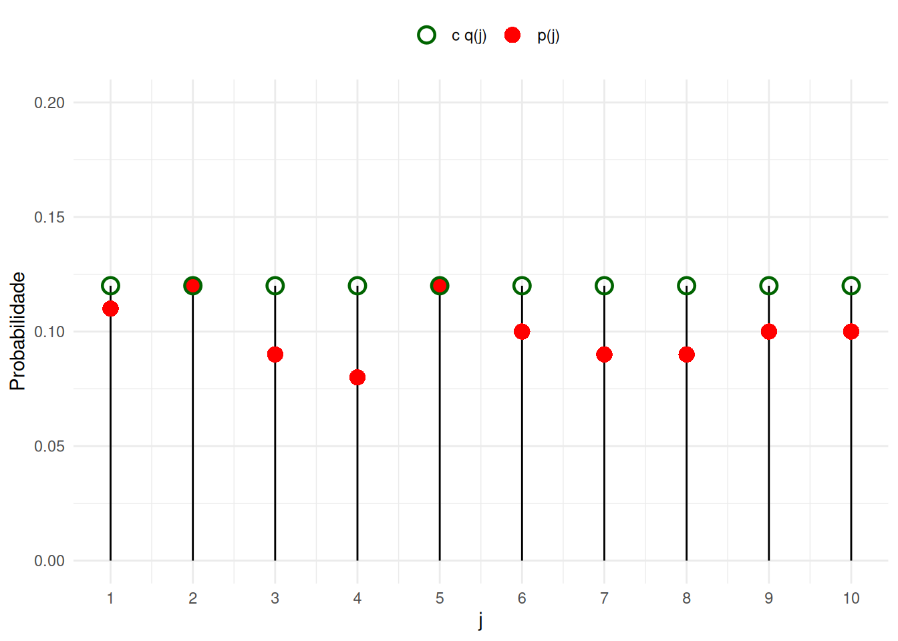

No Capítulo 3 vimos como gerar v.a. discretas pela técnica da inversão: acumulamos as probabilidades \(p_1, p_2, \ldots\) até ultrapassar um valor \(U \sim \text{Unif}(0,1)\). Esse método sempre funciona, mas exige que saibamos percorrer o suporte em ordem e calcular a f.d.a. do alvo.
O método da rejeição parte de uma ideia diferente. Em vez de construir \(X\) diretamente a partir de \(U\), ele usa uma segunda distribuição — fácil de simular — para propor candidatos, e um sorteio adicional para decidir se cada candidato é aceito ou descartado. O preço a pagar é jogar fora parte dos valores gerados; em troca, basta saber calcular a razão entre as duas funções de probabilidade. Nunca precisamos da f.d.a. do alvo e, como veremos nos exercícios, nem mesmo da constante que normaliza \(p_j\).
Neste capítulo tratamos o caso discreto. No próximo veremos que a versão contínua do método é essencialmente a mesma, trocando funções de probabilidade por densidades.
7.1 Algoritmo
Seja \(X\) uma v.a. discreta com \(\mathbb{P}(X = x_j) = p_j\); essa é a distribuição alvo, aquela da qual queremos amostrar. O método supõe que sabemos simular uma segunda v.a. \(Y\), com \(\mathbb{P}(Y = x_j) = q_j\), chamada de distribuição proposta.
Atenção: a proposta precisa cobrir o suporte do alvo
É indispensável que \(q_j > 0\) sempre que \(p_j > 0\). Se a proposta nunca sugere um valor que o alvo pode assumir, esse valor jamais aparecerá na amostra — e o algoritmo devolve, silenciosamente, uma distribuição errada.
Além disso, supomos conhecida uma constante \(c\) tal que
\[
\frac{p_j}{q_j} \leq c \quad \text{para todo } j \text{ com } p_j > 0.
\]
Quando o suporte é finito, a menor constante que serve é simplesmente \(c = \max_j p_j / q_j\). Note ainda que necessariamente \(c \geq 1\): somando a desigualdade \(p_j \leq c\, q_j\) sobre os valores de \(j\) com \(p_j > 0\), obtemos
onde a última passagem usa que a soma de um subconjunto das probabilidades \(q_j\) é, no máximo, \(1\).
Pseudo-algoritmo: rejeição para v.a. discretas
Gere \(Y\) a partir da distribuição proposta \(q\).
Gere \(U \sim \text{Unif}(0,1)\), independente de \(Y\).
Se \(Y = x_j\) e \(U \leq \dfrac{p_j}{c\, q_j}\), devolva \(X = x_j\). Caso contrário, descarte \(Y\) e volte ao passo 1.
O passo 3 é apenas um sorteio de Bernoulli: aceitamos o candidato com probabilidade \(p_j / (c\, q_j)\). É exatamente a escolha de \(c\) que garante que esse número esteja entre \(0\) e \(1\) e, portanto, seja de fato uma probabilidade.
7.2 Exemplo: uma distribuição sobre \(\{1, 2, \ldots, 10\}\)
Vamos exemplificar a amostragem por rejeição gerando valores de uma distribuição alvo \(p_j\), utilizando uma uniforme discreta como distribuição proposta.
Suponha que \(Y\) siga uma distribuição uniforme discreta em \(\{1, 2, \dots, 10\}\), ou seja, \(q_j = 1/10\) para todo \(j\). A distribuição alvo \(p_j\) tem os seguintes valores:
\(j\)
1
2
3
4
5
6
7
8
9
10
\(p_j\)
0,11
0,12
0,09
0,08
0,12
0,10
0,09
0,09
0,10
0,10
Precisamos de uma constante \(c\) com \(p_j / q_j \leq c\) para todo \(j\). Como \(q_j = 1/10\) para todos os valores, a razão \(p_j/q_j = 10\,p_j\) é máxima onde \(p_j\) é máximo, isto é, em \(j = 2\) e \(j = 5\). Logo,
O gráfico a seguir ilustra o que o algoritmo faz. Para cada \(j\), a haste preta vai de \(0\) até \(c\, q_j\) (ponto verde), e o ponto vermelho marca a altura \(p_j\). Sorteamos um valor do suporte com probabilidade uniforme e o aceitamos com probabilidade igual à razão entre a altura do ponto vermelho e a do ponto verde — que é justamente \(p_j / (c\, q_j)\).
library(ggplot2)# Valores de j e probabilidades p_j (alvo) e q_j (proposta)valores_j <-1:10p_j <-c(0.11, 0.12, 0.09, 0.08, 0.12, 0.10, 0.09, 0.09, 0.10, 0.10)q_j <-rep(1/10, length(p_j)) # proposta: uniforme discreta em {1, ..., 10}# Menor constante que satisfaz p_j <= cte * q_j para todo j.# Chamamos de `cte` (e não de `c`) para não esconder a função c() do Rcte <-max(p_j / q_j)# Data frame no formato longo: uma linha para cada par (j, curva)df <-data.frame(j =rep(valores_j, 2),prob =c(p_j, cte * q_j),curva =rep(c("p(j)", "c q(j)"), each =length(valores_j)))# As hastes vão de 0 até c*q_j, o "teto" da região de propostasdf_hastes <-data.frame(j = valores_j, teto = cte * q_j)# O teto é desenhado como círculo vazado: assim, quando p_j = c*q_j (em j = 2 e# j = 5) o ponto vermelho continua visível por dentro do círculo verdeggplot(df, aes(x = j, y = prob, color = curva, shape = curva)) +geom_segment(data = df_hastes, aes(x = j, xend = j, y =0, yend = teto),inherit.aes =FALSE, color ="black") +geom_point(size =3.5, stroke =1.2) +scale_color_manual(values =c("p(j)"="red", "c q(j)"="darkgreen"), name ="") +scale_shape_manual(values =c("p(j)"=16, "c q(j)"=1), name ="") +scale_x_continuous(breaks = valores_j) +ylim(0, 0.2) +labs(x ="j", y ="Probabilidade") +theme_minimal() +theme(legend.position ="top")

Mostrar código
import numpy as npimport matplotlib.pyplot as plt# Valores de j e probabilidades p_j (alvo) e q_j (proposta)valores_j = np.arange(1, 11)p_j = np.array([0.11, 0.12, 0.09, 0.08, 0.12, 0.10, 0.09, 0.09, 0.10, 0.10])q_j = np.full_like(p_j, 1/10) # proposta: uniforme discreta em {1, ..., 10}# Menor constante que satisfaz p_j <= cte * q_j para todo jcte =max(p_j / q_j)plt.figure(figsize=(8, 5))# As hastes vão de 0 até c*q_j, o "teto" da região de propostasplt.vlines(valores_j, 0, cte * q_j, color="black")# O teto é desenhado como círculo vazado: assim, quando p_j = c*q_j (em j = 2 e# j = 5) o ponto vermelho continua visível por dentro do círculo verdeplt.plot(valores_j, p_j, "o", color="red", markersize=6, label="p(j)")plt.plot(valores_j, cte * q_j, "o", markerfacecolor="none", markeredgecolor="darkgreen", markeredgewidth=1.5, markersize=9, label="c q(j)")plt.xticks(valores_j)
([<matplotlib.axis.XTick object at 0x7519991d82d0>, <matplotlib.axis.XTick object at 0x7519991d4590>, <matplotlib.axis.XTick object at 0x7519c450c7d0>, <matplotlib.axis.XTick object at 0x7519991db250>, <matplotlib.axis.XTick object at 0x7519991db9d0>, <matplotlib.axis.XTick object at 0x75199672c190>, <matplotlib.axis.XTick object at 0x75199672c910>, <matplotlib.axis.XTick object at 0x75199672d090>, <matplotlib.axis.XTick object at 0x75199672d810>, <matplotlib.axis.XTick object at 0x75199672df90>], [Text(1, 0, '1'), Text(2, 0, '2'), Text(3, 0, '3'), Text(4, 0, '4'), Text(5, 0, '5'), Text(6, 0, '6'), Text(7, 0, '7'), Text(8, 0, '8'), Text(9, 0, '9'), Text(10, 0, '10')])
O código a seguir implementa o pseudo-algoritmo e gera 1000 valores dessa distribuição. Além das amostras aceitas, contamos quantas propostas foram necessárias: isso nos permite comparar a taxa de aceitação observada com o valor teórico \(1/c\).
set.seed(42)# --- Parâmetros do problema ---valores_j <-1:10p_j <-c(0.11, 0.12, 0.09, 0.08, 0.12, 0.10, 0.09, 0.09, 0.10, 0.10)q_j <-rep(1/10, 10)cte <-max(p_j / q_j)# --- Método da rejeição ---n_amostras <-1000amostras <-c() # guarda os valores aceitosn_propostas <-0# conta quantas vezes o passo 1 foi executadowhile (length(amostras) < n_amostras) {# Passo 1: gerar Y da proposta (uniforme discreta em {1, ..., 10}) y <-sample(valores_j, 1) n_propostas <- n_propostas +1# Passo 2: gerar U ~ Unif(0,1) u <-runif(1)# Passo 3: aceitar y com probabilidade p_y / (c * q_y).# Como o suporte é 1, ..., 10, o próprio valor y serve de índice do vetor razao <- p_j[y] / (cte * q_j[y])if (u <= razao) { amostras <-c(amostras, y) }}# --- Resultados ---cat("Primeiras 20 amostras geradas:\n")
Primeiras 20 amostras geradas:
Mostrar código
print(amostras[1:20])
[1] 1 10 2 1 4 5 4 2 9 4 5 2 8 10 4 2 5 2 2 8
Mostrar código
cat("\nPropostas geradas:", n_propostas, "\n")
Propostas geradas: 1209
Mostrar código
cat("Taxa de aceitação observada:", round(n_amostras / n_propostas, 3), "\n")
Taxa de aceitação observada: 0.827
Mostrar código
cat("Taxa de aceitação teórica (1/c):", round(1/ cte, 3), "\n")
Taxa de aceitação teórica (1/c): 0.833
Mostrar código
# Tabela de frequência (factor com levels garante que todos os j apareçam,# mesmo os que porventura não tenham sido sorteados)tabela_freq <-table(factor(amostras, levels = valores_j))comparacao <-data.frame(j = valores_j,freq_absoluta =as.integer(tabela_freq),freq_relativa =as.numeric(tabela_freq) / n_amostras,p_j = p_j)cat("\nFrequências dos", n_amostras, "valores gerados:\n")
import numpy as npimport pandas as pdnp.random.seed(42)# --- Parâmetros do problema ---valores_j = np.arange(1, 11)p_j = np.array([0.11, 0.12, 0.09, 0.08, 0.12, 0.10, 0.09, 0.09, 0.10, 0.10])q_j = np.full_like(p_j, 1/10)cte =max(p_j / q_j)# --- Método da rejeição ---n_amostras =1000amostras = [] # guarda os valores aceitosn_propostas =0# conta quantas vezes o passo 1 foi executadowhilelen(amostras) < n_amostras:# Passo 1: gerar Y da proposta (uniforme discreta em {1, ..., 10}) y = np.random.choice(valores_j) n_propostas +=1# Passo 2: gerar U ~ Unif(0,1) u = np.random.uniform(0, 1)# Passo 3: aceitar y com probabilidade p_y / (c * q_y).# Usamos y - 1 porque em Python o primeiro elemento do vetor tem índice 0 razao = p_j[y -1] / (cte * q_j[y -1])if u <= razao: amostras.append(y)# --- Resultados ---print("Primeiras 20 amostras geradas:")
Primeiras 20 amostras geradas:
Mostrar código
print(np.array(amostras[:20])) # np.array só para imprimir de forma compacta
[ 8 7 7 8 8 6 6 5 10 9 10 3 4 7 7 2 10 4 7 8]
Mostrar código
print("\nPropostas geradas:", n_propostas)
Propostas geradas: 1186
Mostrar código
print("Taxa de aceitação observada:", round(n_amostras / n_propostas, 3))
Taxa de aceitação observada: 0.843
Mostrar código
print("Taxa de aceitação teórica (1/c):", round(1/ cte, 3))
Taxa de aceitação teórica (1/c): 0.833
Mostrar código
# Tabela de frequência (reindex garante que todos os j apareçam,# mesmo os que porventura não tenham sido sorteados)tabela_freq = pd.Series(amostras).value_counts().reindex(valores_j, fill_value=0)comparacao = pd.DataFrame({"j": valores_j,"freq_absoluta": tabela_freq.values,"freq_relativa": tabela_freq.values / n_amostras,"p_j": p_j})print("\nFrequências dos", n_amostras, "valores gerados:")
Atenção: índices começam em 1 no R e em 0 no Python
No código acima o suporte é \(\{1, 2, \ldots, 10\}\), então em R o valor sorteado y serve diretamente como índice: p_j[y] é exatamente \(p_y\). Em Python o primeiro elemento de um vetor é p_j[0], e por isso escrevemos p_j[y - 1].
Esse deslocamento é fonte frequente de erros silenciosos: o programa roda sem reclamar, mas gera a distribuição errada. Se o suporte não fosse \(\{1, \ldots, 10\}\) — por exemplo, se fosse \(\{0, 1, \ldots, 9\}\) ou \(\{2, 4, 6\}\) — o mais seguro seria usar um dicionário (Python) ou um vetor nomeado (R) associando cada valor à sua probabilidade.
7.3 Por que o método funciona
Proposição
Suponha que \(q_j > 0\) sempre que \(p_j > 0\) e que \(p_j / q_j \leq c\) para todo \(j\) com \(p_j > 0\). Então:
o valor \(X\) devolvido pelo método da rejeição satisfaz \(\mathbb{P}(X = x_j) = p_j\) para todo \(j\);
o número \(N\) de propostas geradas até o primeiro aceite tem distribuição geométrica com probabilidade de sucesso \(1/c\). Em particular, \(\mathbb{E}[N] = c\).
Demonstração
Seja \(Y\) o valor proposto em um passo qualquer do algoritmo. Condicionando no valor de \(Y\),
Como os passos são independentes e cada um aceita com probabilidade \(1/c\), o número \(N\) de propostas até o primeiro aceite tem distribuição geométrica com probabilidade de sucesso \(1/c\), e portanto \(\mathbb{E}[N] = c\). Isso prova (ii).
Para (i), note que o algoritmo devolve \(x_j\) quando, para algum \(n \geq 1\), as primeiras \(n - 1\) propostas foram rejeitadas e a \(n\)-ésima propôs \(x_j\) e foi aceita. Somando sobre \(n\) e usando a soma da série geométrica:
O item (ii) da proposição tem uma consequência prática importante: para gerar um valor da distribuição alvo, o algoritmo gasta, em média, \(c\) propostas. Equivalentemente, a fração de candidatos aceitos é \(1/c\). Toda a eficiência do método está concentrada nessa única constante.
Como vimos, \(c \geq 1\) sempre. O caso \(c = 1\) ocorre exatamente quando \(q_j = p_j\) para todo \(j\) — ou seja, quando a proposta é o alvo e nada é rejeitado. Isso não ajuda na prática (se soubéssemos simular de \(p\), não precisaríamos do método), mas indica a direção certa: quanto mais parecida a proposta for com o alvo, menor o \(c\) e mais eficiente o algoritmo.
No exemplo acima, \(c = 1{,}2\): aceitamos cerca de \(1/1{,}2 \approx 83\%\) das propostas, e gastamos em média \(1{,}2\) propostas por valor gerado. Isso é excelente, e não é coincidência: o alvo é quase uniforme, então a proposta uniforme é quase igual a ele.
Agora imagine que, para esse mesmo alvo, usássemos como proposta uma uniforme em \(\{1, 2, \ldots, 100\}\). Ela cobre o suporte do alvo, então o método continua correto, mas agora \(q_j = 1/100\) e
de modo que apenas \(1/12 \approx 8\%\) das propostas seriam aceitas: o mesmo resultado a um custo dez vezes maior. Note ainda que \(c\) depende apenas de \(p\) e \(q\), e não do tamanho \(n\) da amostra que queremos gerar — uma proposta ruim é ruim para sempre.
7.5 Exercícios
Exercício 1. Considere uma distribuição alvo \(X\) com suporte em \(\{1, 2, \dots, 15\}\) e função de probabilidade
Use como distribuição proposta uma uniforme discreta em \(\{1, 2, \dots, 15\}\).
Determine a constante \(c\). Em qual valor de \(j\) a razão \(p_j/q_j\) é máxima, e por quê?
Implemente o método da rejeição e gere 1000 amostras. Compare graficamente as frequências relativas obtidas com as probabilidades teóricas \(p_j\).
Calcule a taxa de aceitação observada e compare com o valor teórico \(1/c\).
Modifique seu código para guardar, para cada valor aceito, quantas propostas foram necessárias até aceitá-lo. Compare o histograma desses valores com a função de probabilidade de uma \(\text{Geométrica}(1/c)\), conforme o item (ii) da proposição.
Exercício 2. Seja \(X \sim \text{Binomial}(10, p)\), com
e use como proposta a uniforme discreta em \(\{0, 1, \ldots, 10\}\).
Mostre que a menor constante possível é \(c = 11 \max_{j} p_j\), e calcule seu valor para \(p = 0{,}5\) e para \(p = 0{,}05\).
Para cada um dos dois valores de \(p\), implemente o método e gere 5000 amostras, registrando a taxa de aceitação observada. Confira que ela bate com \(1/c\).
A proposta uniforme é muito pior para \(p = 0{,}05\) do que para \(p = 0{,}5\). Explique o motivo comparando o formato das duas distribuições alvo com o da proposta.
Cuidado com a indexação: aqui o suporte começa em \(0\), e não em \(1\). Descreva o que aconteceria com a distribuição gerada se, em R, você escrevesse p_j[y] em vez de p_j[y + 1].
Exercício 3. Seja \(W \sim \text{Binomial}(20;\ 0{,}3)\) e considere a distribuição alvo dada por \(W\)condicionada a \(W \geq 10\), isto é,
e \(p_j = 0\) para \(j < 10\). Como distribuição proposta, use a própria \(\text{Binomial}(20;\ 0{,}3)\), ou seja, \(q_j = \mathbb{P}(W = j)\) para \(j = 0, 1, \ldots, 20\).
Mostre que \(p_j / q_j = 1/\mathbb{P}(W \geq 10)\) para \(j \geq 10\) e que essa razão vale \(0\) para \(j < 10\). Conclua que a menor constante possível é \(c = 1/\mathbb{P}(W \geq 10)\).
Substitua esse \(c\) no critério do passo 3 e mostre que a probabilidade de aceitação vale \(1\) quando \(y \geq 10\) e \(0\) caso contrário. Ou seja: o sorteio de \(U\) se torna irrelevante e o algoritmo se reduz a “gere valores da binomial até obter um maior ou igual a 10”.
Implemente o algoritmo (use rbinom em R ou np.random.binomial em Python para gerar as propostas) e gere 2000 valores.
Calcule o número médio de propostas por valor aceito e compare com \(1/\mathbb{P}(W \geq 10)\). O método é eficiente neste caso? O que isso sugere sobre usar rejeição para amostrar de eventos raros?
Exercício 4. Muitas vezes conhecemos a função de probabilidade alvo apenas a menos de uma constante de normalização: sabemos calcular \(w_j\), mas não a constante \(k\) tal que \(p_j = k\, w_j\). O método da rejeição funciona mesmo assim. Se \(c'\) é tal que \(w_j \leq c'\, q_j\) para todo \(j\), o critério de aceitação \(U \leq p_j/(c\,q_j)\) com \(c = k\,c'\) vira
Considere \(w_j = 1/j^2\) para \(j = 1, 2, \ldots, 50\) (de modo que \(p_j = k/j^2\) com \(k = 1 / \sum_{j=1}^{50} j^{-2}\)), e use como proposta a uniforme discreta em \(\{1, 2, \ldots, 50\}\).
Determine \(c' = \max_j w_j / q_j\).
Implemente o método usando apenas \(w_j\), \(q_j\) e \(c'\), e gere 5000 amostras. Compare as frequências relativas obtidas com os valores \(p_j\) (que você pode calcular à parte, apenas para conferir).
A taxa de aceitação observada é bem baixa. Explique por quê, comparando o formato de \(p_j\) com o da proposta uniforme.
(Desafio) Pela proposição, a taxa de aceitação estima \(1/c = 1/(k\,c')\). Use a taxa observada no item (b) para construir uma estimativa \(\hat{k}\) da constante de normalização, e compare com o valor exato de \(k\). Repare que acabamos de estimar uma soma sem nunca tê-la calculado.
Exercício 5. Neste exercício, o desafio é amostrar de uma distribuição com suporte infinito: uma Poisson truncada em zero. Isso é útil em cenários onde contamos eventos, mas apenas os casos em que pelo menos um evento ocorreu são registrados.
A distribuição alvo \(X\) é uma Poisson com parâmetro \(\lambda = 4\) truncada em zero, cuja função de probabilidade, para \(k \in \{1, 2, 3, \dots\}\), é
Como distribuição proposta \(Y\), use uma \(\text{Geométrica}(0{,}25)\) contando o número de tentativas até o primeiro sucesso, que também tem suporte em \(\{1, 2, 3, \dots\}\):
Implemente funções que calculem \(p_k\) e \(q_k\) para um dado \(k\).
Ao contrário do caso de suporte finito, não podemos percorrer todos os valores para achar o máximo de \(p_k/q_k\). Calcule a razão \(r_k = p_k/q_k\) para \(k = 1, \ldots, \lceil 10\lambda \rceil\) e faça um gráfico de \(r_k\) contra \(k\). O máximo observado é uma boa aproximação para \(c\).
Implemente o amostrador e gere 5000 valores. Atenção: em R, rgeom conta o número de falhas antes do primeiro sucesso, então é preciso somar 1 ao resultado; em Python, np.random.geometric já conta o número de tentativas.
Construa um gráfico de barras comparando as frequências relativas observadas com as probabilidades teóricas \(p_k\), e compare a taxa de aceitação observada com \(1/c\).
(Desafio) Suponha que trocássemos os papéis: alvo geométrica e proposta Poisson truncada. Mostre que, nesse caso, a razão \(p_k/q_k\) é ilimitada e portanto não existe constante \(c\) válida. Qual característica das caudas das duas distribuições explica isso?
Exercício 6. Vamos comparar os dois métodos que já conhecemos para gerar v.a. discretas.
Implemente uma função que gere \(n\) valores da distribuição do exemplo deste capítulo (a tabela sobre \(\{1, \ldots, 10\}\)) pela técnica da inversão do Capítulo 3.
Implemente outra função que gere \(n\) valores da mesma distribuição pelo método da rejeição.
Meça o tempo de execução das duas funções para \(n = 10^5\) (use system.time em R ou time.time em Python). Qual é mais rápida?
Repita a comparação usando como proposta a uniforme discreta em \(\{1, \ldots, 100\}\) discutida na seção sobre eficiência. Como o tempo do método da rejeição se altera? E o da inversão?
Exercício 7. (Desafio) Este exercício explora o papel da constante \(c\).
Mostre que qualquer constante válida satisfaz \(c \geq 1\), com igualdade se e somente se \(q_j = p_j\) para todo \(j\).
Mostre que, se existe \(j\) com \(p_j > 0\) e \(q_j = 0\), então não existe \(c\) válido.
Usar um \(c\)maior que \(\max_j p_j/q_j\) não compromete a corretude do método, apenas sua eficiência. Justifique reexaminando a demonstração da proposição, e verifique empiricamente gerando 5000 valores do exemplo do capítulo com \(c = 5\) em vez de \(c = 1{,}2\).
Suponha agora que alguém use, por engano, um \(c\)menor que \(\max_j p_j/q_j\), e que o código aceite sempre que \(U \leq p_j/(c\,q_j)\) — o que para alguns \(j\) significa aceitar com probabilidade 1. Mostre que a distribuição gerada passa a ter probabilidades proporcionais a \(q_j \min\{1,\, p_j/(c\,q_j)\}\), e verifique empiricamente com \(c = 1\) no exemplo do capítulo. Quais valores do suporte ficam sub-representados?